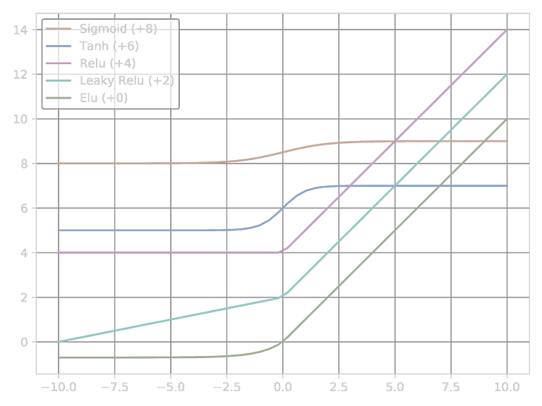

Tensorflow 1.X
Hello
import tensorflow as tf # Tensor a = tf.constant(1) b = tf.constant(2) result = tf.add(a, b) print(result) # Session with tf.Session() as sess: print(sess.run(result))
Tensor
- 阶张量：标量（Scalar）也就是个实数
- 阶张量：向量（Vector）也就是维数组
- 阶张量：矩阵（Matrix）也就是维数组
- 阶张量：维数组
张量的属性
定义一个常量张量
tensor_constant_demo = tf.constant([ [1.1, 2.2, 3.3], [4.4, 5.5, 6.6] ], name='tensor_constant_demo', dtype=tf.float32)
Operation（OP，运算）：节点在图中被称为OP，OP即某种抽象计算。
print(tensor_constant_demo.op) print("name" , tensor_constant_demo.name) print("type" , tensor_constant_demo.dtype) print("shape", tensor_constant_demo.shape) print("graph", tensor_constant_demo.graph)
调整张量
# 类型转换 result_cast = tf.cast(tensor_constant_demo, tf.int32, name='result_cast') print(tensor_constant_demo.dtype, '=>', result_cast.dtype) # 结构调整 result_reshape = tf.reshape(tensor_constant_demo, [3, 2], name='result_reshape') print(tensor_constant_demo.shape, '=>', result_reshape.shape)
序列张量
# 从1开始步长为3不超过10的序列 tensor_range = tf.range(1, 10, 3, dtype=None, name=None) ''' [1 4 7] ''' # 10~100等分为5份 tensor_space = tf.linspace(10.0, 100.0, 5, name=None) ''' [10.0 32.5 55.0 77.5 100.0] '''
填充张量
# 产生以给定值填充的张量 tensor_fill = tf.fill([2, 3], 99, name=None) ''' [[99 99 99] [99 99 99]] ''' # 产生以0填充的张量 tensor_zeros = tf.zeros([2, 3], tf.float32, name=None) ''' [[0. 0. 0.] [0. 0. 0.]] ''' # 产生以1填充的张量 tensor_ones = tf.ones([2, 3], tf.float32, name=None) ''' [[1. 1. 1.] [1. 1. 1.]] ''' # 产生对角线为[1, 2, 3, 4]其余为0的二维张量 tensor_diag = tf.diag([1, 2, 3, 4], name=None) ''' [[1 0 0 0] [0 2 0 0] [0 0 3 0] [0 0 0 4]] '''
随机数张量
# 正态分布随机数(shape, mean:平均数, stddev:标准差) tensor_random1 = tf.random_normal([2, 3], 10, 0.6, name=None) ''' [[9.929678 9.88656 9.663629] [9.634826 9.379279 9.33766 ]] ''' # 正态分布随机数，偏离2个标准差的随机值会被重新生成 tensor_random2 = tf.truncated_normal([2, 3], 10, 0.6, name=None) ''' [[10.298693 10.121988 10.665423] [10.015184 10.673774 10.18005 ]] ''' # 均匀分布随机数(shape, min, max) tensor_random3 = tf.random_uniform([2, 3], 1, 10, name=None) ''' [[8.568491 6.56831 2.8412023] [3.7498274 4.389385 8.6796055]] ''' # Γ(Gamma)随机数(shape, alpha, beta) # tf.random_gamma(...)
Session
a = tf.constant(1, name="a") b = tf.constant(2, name="b") result = tf.add(a, b) print(result) # Tensor("Add:0", shape=(), dtype=int32)
一般会话
with tf.Session() as sess: # 方式1 print(sess.run(result)) # 方式2 print(result.eval(session=sess))
默认会话
with tf.Session().as_default(): print(result.eval())
交互会话
该方法一般用在命令窗口中。
sess = tf.InteractiveSession() print(result.eval()) sess.close()
配置会话
""" log_device_placement: 打印设备信息 allow_soft_placement: GPU异常时，可以调整到CPU执行 """ with tf.Session(config=tf.ConfigProto(log_device_placement=True, allow_soft_placement=True)) as sess: print(sess.run(result))
运行时数据
X = tf.placeholder(tf.float32, shape=(None, 2)) # 样本组数不固定，每组两个 Y = X * 3 with tf.Session() as sess: # → print(sess.run(Y)) # ↑ InvalidArgumentError: 此处X还没有赋值 print(sess.run(Y, feed_dict={ X: [ [1, 2], [2, 3] ] })) print(sess.run(Y, feed_dict={ X: [ [1, 2], [2, 3], [5, 3] ] }))
Variable
定义变量
# 方式1 var1 = tf.Variable(99, name='var1') var2 = tf.Variable(tf.random_normal([2, 3], mean=10, stddev=2), name='var2') # 方式2 var3 = tf.get_variable('var3', initializer=tf.zeros_initializer(), shape=[2]) var4 = tf.get_variable('var4', initializer=tf.ones_initializer(), shape=[3])
当设置reuse=True时，get_variable可以防止重复定义。
此外，当使用get_variable方法时，变量只能以
tf.constant_initializer()tf.random_normal_initializer()tf.truncated_normal_initializer()tf.random_uniform_initializer()tf.uniform_unit_scaling_initializer()tf.zeros_initializer()tf.ones_initializer()
等方法初始化。
使用变量
在使用变量前，必须初始化变量，我们可以采取sess.run(var1.initializer)方法只初始化在本次会话中要用到的变量，也可以使用tf.global_variables_initializer().run()或sess.run(tf.global_variables_initializer())方法直接初始化全部变量。
with tf.Session() as sess: # 使用前，必须初始化变量 sess.run(var1.initializer) sess.run(var3.initializer) # 获得变量的值 print(sess.run(var1)) # print(sess.run(var2)) # var1 未被初始化，使用会报错。 with tf.variable_scope("", reuse=True): print(sess.run(tf.get_variable("var3"))) # print(sess.run(tf.get_variable("var4"))) # var4 未被初始化，使用会报错。
with tf.Session() as sess: # 初始化全部变量 tf.global_variables_initializer().run() # sess.run(tf.global_variables_initializer()) # 获得变量的值 print(sess.run(var1)) print(sess.run(var2)) print() with tf.variable_scope("", reuse=True): print(sess.run(tf.get_variable("var3"))) print(sess.run(tf.get_variable("var4")))
变量空间
""" 创建变量 """ # 创建变量 space1.var1 = 0 with tf.variable_scope("space1"): tf.get_variable('var1', initializer=tf.zeros_initializer(), shape=[1]) # 创建变量 space2.var1 = 1 with tf.variable_scope("space2"): tf.get_variable('var1', initializer=tf.ones_initializer(), shape=[1]) """ 使用变量 """ with tf.Session() as sess: # 初始化全部变量 tf.global_variables_initializer().run() with tf.variable_scope("space1", reuse=True): print(sess.run(tf.get_variable("var1"))) with tf.variable_scope("space2", reuse=True): print(sess.run(tf.get_variable("var1")))
Graph
默认图
当我们没有指定图时，Tensorflow会为我们提供一张默认的图，此时，我们的张量、会话、变量都是运行在默认的图上。
g0 = tf.get_default_graph() # 获取默认的图 a = tf.constant([1.0, 2.0], name="a") b = tf.constant([2.0, 3.0], name="b") result = a + b print(a.graph is g0) print(b.graph is g0) print(result.graph is g0)
自定义图
g0 = tf.get_default_graph() g1 = tf.Graph() print("g0 is default?", tf.get_default_graph() is g0) # True print("g1 is default?", tf.get_default_graph() is g1) # False with g1.as_default(): print("\t", "g1 is default?", tf.get_default_graph() is g1) # True # g1中定义变量，并赋值 var1 = tf.Variable(1, name='var1') print("\t", "var1 is in g1?", var1.graph is g1) # True # end with(graph) print("g0 is default?", tf.get_default_graph() is g0) # True print("g1 is default?", tf.get_default_graph() is g1) # False
自定义图并运行会话
g0 = tf.get_default_graph() g2 = tf.Graph() with g2.as_default(): print("\t", "g2 is default?", tf.get_default_graph() is g2) # True var1 = tf.Variable(2, name='var1') """ 方式一 """ with tf.Session() as sess: tf.global_variables_initializer().run() print("\t", "g2 var1 = ", sess.run(var1)) # end with(sess) # end with(graph) print("g0 is default?", tf.get_default_graph() is g0) # True print("g2 is default?", tf.get_default_graph() is g2) # False """ 方式二 """ with tf.Session(graph=g2) as sess: print("\t", "g2 is default?", tf.get_default_graph() is g2) # True tf.global_variables_initializer().run() print("\t", "g2 var1 = ", sess.run(var1)) # end with(sess)
TensorBoard
封装
import os import tensorflow as tf class TensorBoard: def __init__(self, summary_dir="./summary"): assert os.path.isdir(os.path.dirname(summary_dir)) is True # 上级目录存在 if os.path.exists(summary_dir): assert os.path.isdir(summary_dir) is True # 指定目录不是文件 else: os.makedirs(summary_dir) # end if self.summary_dir = os.path.abspath(summary_dir) def remake(self): os.system('RMDIR /S /Q "' + self.summary_dir + '"') os.system('MKDIR "' + self.summary_dir + '"') def save(self, g): tf.summary.FileWriter(self.summary_dir, graph=g) def board(self): print("TensorBoard may view at:") print(" * http://%s:6006/" % os.environ['ComputerName']) print(" * http://localhost:6006/") print(" * http://127.0.0.1:6006/") os.system('tensorboard --logdir="' + self.summary_dir + '"')
使用
a = tf.constant(5.0, name="a") b = tf.constant(6.0, name="b") c = tf.add(a, b, name='c') tb = TensorBoard() with tf.Session() as sess: tb.save(sess.graph) tb.board()
Activate
将非线性特性引入到我们的网络中。
import matplotlib.pyplot as plt import numpy as np x = np.linspace(-10, 10) y_sigmoid = 1 / (1 + np.exp(-x)) y_tanh = (np.exp(x) - np.exp(-x)) / (np.exp(x) + np.exp(-x)) y_relu = np.array([0 if item < 0 else item for item in x]) alpha_relu = 0.2 y_leaky_relu = np.array([alpha_relu * item if item < 0 else item for item in x]) alpha_elu = 0.7 y_elu = np.array([alpha_elu*(np.exp(item)-1) if item < 0 else item for item in x]) plt.figure(dpi=600) plt.plot(x, 8+y_sigmoid, label='Sigmoid (+8)') plt.plot(x, 6+y_tanh, label='Tanh (+6)') plt.plot(x, 4+y_relu, label='Relu (+4)') plt.plot(x, 2+y_leaky_relu, label='Leaky Relu (+2)') plt.plot(x, 0+y_elu, label='Elu (+0)') plt.grid() plt.legend() plt.show()

Sigmoid
tf.nn.sigmoid(x)
Tanh
tf.nn.tanh(x)
ReLU
tf.nn.relu(x)
Leaky ReLU
tf.nn.leaky_relu(x, alpha=0.2)
ELU
- ：ELU负值部分在何时饱和。
tf.nn.elu(x, alpha=0.2)
Softmax
把一个序列，变成概率。Softmax是一种非常明显的马太效应（强的更强，弱的更弱）。但是这种方法非常的不稳定。因为要算指数，只要输入稍微大一点，则在计算上一定会溢出。
def softmax(x): exps = np.exp(x) return exps / np.sum(exps)
tf.nn.softmax(logits)
Softmax变体
def stablesoftmax(x): shiftx = x - np.max(x) exps = np.exp(shiftx) return exps / np.sum(exps)
Loss
回归问题
均方误差（MSE）
- 优点是便于梯度下降，误差大时下降快，误差小时下降慢，有利于函数收敛。
- 缺点是受明显偏离正常范围的离群样本的影响较大
loss_mse1 = tf.losses.mean_squared_error(y_true, y_pred) loss_mse2 = tf.reduce_mean(tf.square(y_true - y_pred)) with tf.Session().as_default(): print(loss_mse1.eval()) print(loss_mse2.eval())
平均绝对误差（MAE）
- 优点是其克服了MSE的缺点，受偏离正常范围的离群样本影响较小。
- 缺点是收敛速度比MSE慢，因为当误差大或小时其都保持同等速度下降，而且在某一点处还不可导，计算机求导比较困难。
loss_mae1 = tf.reduce_sum(tf.losses.absolute_difference(y_true, y_pred)) loss_mae2 = tf.reduce_sum(tf.reduce_mean(tf.abs(y_pred - y_true))) with tf.Session().as_default(): print(loss_mae1.eval()) print(loss_mae2.eval())
Huber
Sklearn关于Huber的文档中建议将以达到的有效性。

检测真实值和预测值之差的绝对值在超参数δ内时，使用MSE来计算loss,在δ外时使用MAE计算loss。
loss_huber = tf.reduce_sum(tf.losses.huber_loss(y_true, y_pred)) with tf.Session().as_default(): print(loss_huber.eval())
分类问题
Cross Entropy
模拟自带CE
import tensorflow as tf with tf.Session() as sess: epsilon = 1e-7 loss1 = tf.losses.log_loss(y_true, y_pred, epsilon=epsilon, reduction=tf.losses.Reduction.MEAN) print('log_loss', sess.run(loss1)) loss2 = -tf.reduce_mean( y_true * tf.log(y_pred + epsilon) + (1 - y_true) * tf.log(1 - y_pred + epsilon) ) print('+epsilon', sess.run(loss2)) loss3 = -tf.reduce_mean( y_true * tf.log(tf.clip_by_value(y_pred, epsilon, 1)) + (1 - y_true) * tf.log(tf.clip_by_value(1 - y_pred, epsilon, 1)) ) print('clip__by', sess.run(loss3))
自定义CE
import numpy as np import tensorflow as tf def to_probability(y, epsilon): """ 转换为概率分布 :param y: :param epsilon: :return: """ if isinstance(y, tf.Tensor): __fun_reshape = tf.reshape __fun_clip = tf.clip_by_value __fun_sum = tf.reduce_sum __fun_concat = (lambda x1, x2: tf.concat([x1, x2], axis=1)) else: __fun_reshape = np.reshape __fun_clip = np.clip __fun_sum = np.sum __fun_concat = (lambda x1, x2: np.hstack([x1, x2])) y = __fun_clip(y, epsilon, 1. - epsilon) if 1 == len(y.shape): y = __fun_reshape(y, (-1, 1)) if 1 == y.shape[-1]: y = __fun_concat(y, 1-y) return y / __fun_sum(y, axis=len(y.shape) - 1, keepdims=True) def cross_entropy(y_true, y_pred, epsilon=None): assert y_true.shape == y_pred.shape epsilon = 1e-7 if epsilon is None else epsilon if isinstance(y_true, list): y_true = np.array(y_true) if isinstance(y_pred, list): y_pred = np.array(y_pred) if isinstance(y_true, tf.Tensor): __fun_log = tf.log __fun_sum = tf.reduce_sum __fun_float64 = (lambda x: tf.cast(x, tf.float64)) else: __fun_log = np.log __fun_sum = np.sum __fun_float64 = (lambda x: x.astype(np.float64)) if y_true.dtype != y_pred.dtype: y_true = __fun_float64(y_true) y_pred = __fun_float64(y_pred) y_true = __fun_float64(y_true) y_pred = to_probability(y_pred, epsilon) return ( # binary_cross_entropy -( y_true * __fun_log(y_pred[:, 0]) + (1. - y_true) * __fun_log(y_pred[:, 1]) ) if 1 == len(y_true.shape) or 1 == y_true.shape[-1] else # categorical_cross_entropy -( __fun_sum(y_true * __fun_log(y_pred), axis=len(y_pred.shape) - 1) ) ) if __name__ == '__main__': from sklearn.metrics import log_loss # y_true = ... # y_pred = ... with tf.Session() as sess: _epsilon = 1e-7 print(log_loss(_true, _pred, eps=_epsilon, normalize=False)) print(np.sum(cross_entropy(_true, _pred, _epsilon))) print(np.sum(sess.run(cross_entropy(tf.constant(_true), tf.constant(_pred), _epsilon))))
Sigmoid Cross Entropy
先求Sigmoid再求CrossEntropy，适用于二分类问题。
loss = tf.reduce_mean(tf.nn.sigmoid_cross_entropy_with_logits(labels=y_true, logits=y_pred))
Softmax Cross Entropy
先求Softmax再求CrossEntropy，适用于多分类问题。
loss = tf.reduce_mean(tf.nn.softmax_cross_entropy_with_logits(labels=y_true, logits=y_pred))
正则化
- ：正则化力度（超参数）
- ：元素个数
-
- ：
- ：
正则化主要用于避免过拟合的产生和减少网络误差。
正则化会让参数变得稀疏，且不可导；对正则化的损失函数优化更加简洁。
Optimizer


StochasticGradientDescent（SGD）
每读入一个数据，便立刻计算Loss的梯度来更新参数。
- 优点：有几率跳出局部最优。
- 缺点：可能被困在鞍点（此点处代价震荡）。
train_op = tf.train.GradientDescentOptimizer(learning_rate).minimize(loss_function)
Momentum
模拟物体运动时的惯性，即更新的时候在一定程度上保留之前更新的方向。
train_op = tf.train.MomentumOptimizer(learning_rate, momentum=0.9).minimize(loss_function)
Nesterov Accelerated Gradient（NAG）
我们希望有一个更聪明的球，它知道在山坡再次变缓之前会减速。
# None
Adagrad
可以使学习速率适应参数，对低频特征做较大更新，对高频的做较小更新。
- 优点：无需手动调整学习速度。在稀疏数据上的表现优异。
- 缺点：分母会不断积累，导致学习率急速下降并快速趋近于零。
train_op = tf.train.AdagradOptimizer(learning_rate, initial_accumulator_value=0.01).minimize(loss_function)
Adadelta
是对Adagrad的改进，Adadelta不会累计过去所有的平方梯度，历史梯度的积累将会被限制在某个固定大小，从而避免学习率的急速下降。该算法甚至不需要设置默认学习率。
train_op = tf.train.AdadeltaOptimizer(rho=0.95).minimize(loss_function)
RMSProp
RMSprop和Adadelta都是为了解决Adagrad学习率急剧下降问题的。
train_op = tf.train.RMSPropOptimizer(learning_rate=0.001, decay=0.9).minimize(loss_function)
Adam
相当于RMSprop + Momentum，训练过程就像是一个带有摩擦的沉重的球。
train_op = tf.train.AdamOptimizer(learning_rate, beta1=0.9, beta2=0.999, epsilon=1e-8).minimize(loss_function)